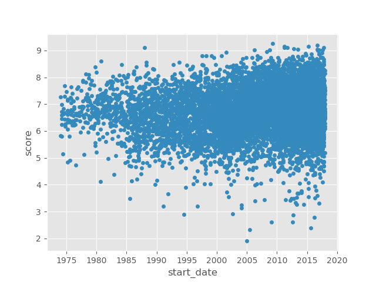
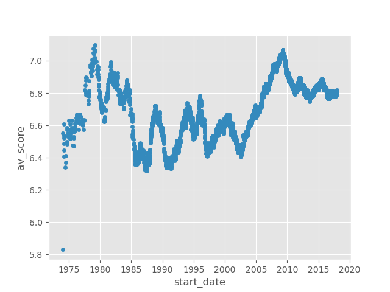

Is Ian Horner right about Anime?
Table of Contents
1 Hypothesis
Wait, does Anime only get good for a few years around the release of a new form of physical media that needs content to sell the players?
LaserDisc > VHS > DVD > BluRay
— @ihorner@mastodon.social
2 TLDR (Abstract)
idk. not really.
3 Methodology
To answer this question we need to decide what anime “getting good” entails. One of the largest anime communities online, MyAnimeList, allows its users to rate animes on a 1-10 scale. By observing how the ratings of anime evolve over time we can try and spot any relation to the releases of major home video formats.
MyAnimeList also has a freely available download on Kaggle of its user data and I defintely didn’t just work backwards from that.
First let’s do our imports.
import ast import datetime import pandas as pd import matplotlib import matplotlib.pyplot as plt matplotlib.use("Agg") plt.style.use("ggplot")
Load in the MyAnimeList data from Kaggle.
df = pd.read_csv("data/AnimeList.csv", sep=",", parse_dates=[]) len(df)
14478
To ensure that we aren’t including anime whose scores haven’t been influenced by a handful of enthusiasts/detractors, we require at least 100 user ratings.
min_ratings = 100 df = df[df["scored_by"] >= min_ratings] len(df)
9689
Now lets remove any anime that don’t have any episodes… somehow.
df = df[df["episodes"] > 0] len(df)
9583
Now we look at airdates. These come in a weird format: there is one entry that
contains a dict as a string with from and to dates. To extract from we just
eval this directly and look up the from key; this is a very bad idea and if
any potential employers are reading this I promise I wound never do this.
Please hire me.
We then restrict our animes to those that first aired between 1973-21-21 (five
years before the LaserDisc came to market) and 2018-01-01 (~6 months before
this data was published, under the assumption that new releases will have
an inflated rating). Then we convert these into actual datetime objects.
early_cutoff = "1973-21-11" late_cutoff = "2018-01-01" df["start_date"] = df["aired"].map(lambda s: ast.literal_eval(s)["from"]) df = df.dropna(subset=["start_date"]) df = df[(df["start_date"] > early_cutoff) & (df["start_date"] < late_cutoff)] df["start_date"] = pd.to_datetime(df["start_date"]).sort_values() len(df)
8817
Now let’s plot these anime’s ratings against their release date and see what we get.
plt.figure() df.plot.scatter(x="start_date", y="score") fn = "plots/rating.png" plt.savefig(fn) fn

Well that sure is a giant, indecipherable blob. Maybe a rolling average with a 1y window will help.
# we have to use 365d because a year isn't a fixed amount of time # (but we pretend a day is I guess) window_size = "365d" df["av_score"] = ( df.sort_values("start_date")[["start_date", "score"]] .rolling(window_size, on="start_date") .mean()["score"] ) plt.figure() df.plot.scatter(x="start_date", y="av_score") fn = "plots/average_rating.png" plt.savefig(fn) fn

Much clearer, we can make out some trends.
Now let’s just mark on the releases of new forms of physical media1:
- LaserDisc (1978-12-11)
- VHS (1976-09-09)
- DVD (1996-11-20)
- BluRay (2006-06-20)
laserdisc = datetime.datetime.strptime("1978-12-11", "%Y-%m-%d") vhs = datetime.datetime.strptime("1976-09-09", "%Y-%m-%d") dvd = datetime.datetime.strptime("1996-11-20", "%Y-%m-%d") bluray = datetime.datetime.strptime("2006-06-20", "%Y-%m-%d") plt.axvline(x=laserdisc) plt.axvline(x=vhs) plt.axvline(x=dvd) plt.axvline(x=bluray) fn = "plots/average_rating_withlines.png" plt.savefig(fn) fn

4 Stuff I couldn’t be bothered to do
- Weight the rolling average according to how many ratings a series received
- Take into account that some anime span literal decades so it isn’t really fair to condense their rating (which is for the whole series) down to the instant of their first air date.
- Really justify any of the decisions I have made at all
- This analysis kinda sucks
5 Conclusion
The only physical media release that clearly corresponds with the hypothesised pattern is DVD: after a slump the user ratings rebound very shorty after its introduction to the market. The same may be true for LaserDisc, but the data is much sparser so it is harder to be conclusive. User ratings rise after the release of Blu-ray, but they were increasing anyway. VHS ruined anime.
Beyond this, there are periods where anime gets good for reasons seemingly unconnected to the release of a new dominant physical media standard.
Footnotes:
my source is wikipedia dot com